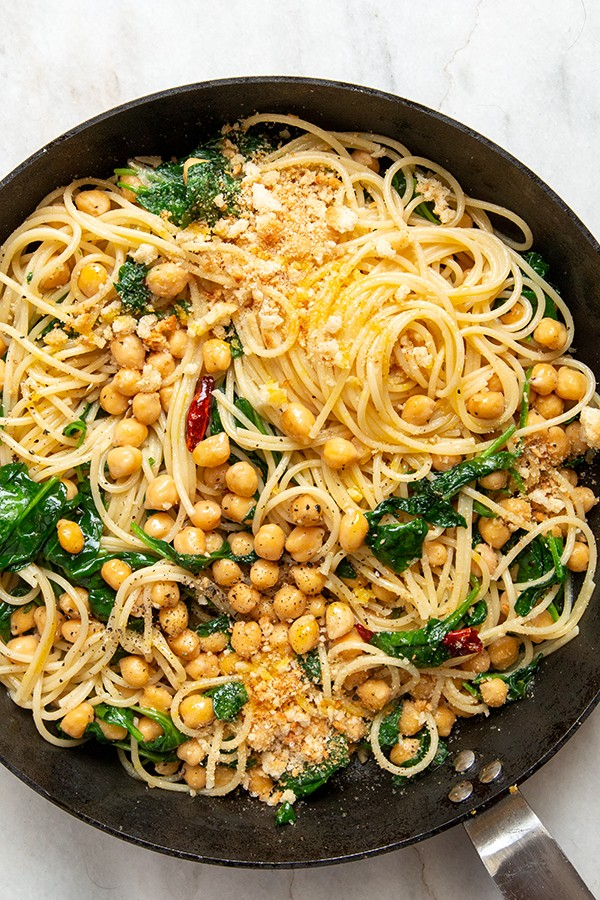

Chickpea Pasta

Description
This recipe is simple and filling vegetarian dish, perfect for a weekday dinner.
Ingredients
- Can of cooked chickpeas
- Dry habanero flakes
- Spinach
- Pasta
- Olive oil
- Garlic
- Lemon
Steps
- Cook the pasta al dente and save some pasta water
- Chop up some garlic and grate lemon zest
- Put lemon zest, garlic and habanero flakes into the pan with olive oil and warm up until fragnant
- Before garlic browns too much put in the chickpeas, salt heavily and turn up the heat
- After few minutes put in the spinach, pasta and saved pasta water
- After the spinach wilts drizzle the dish with lemon juice and serve
Back